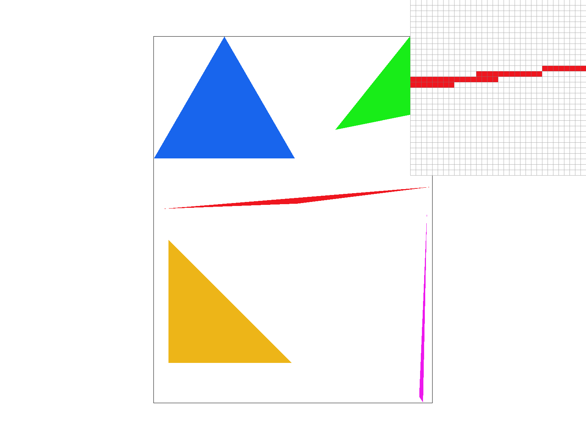
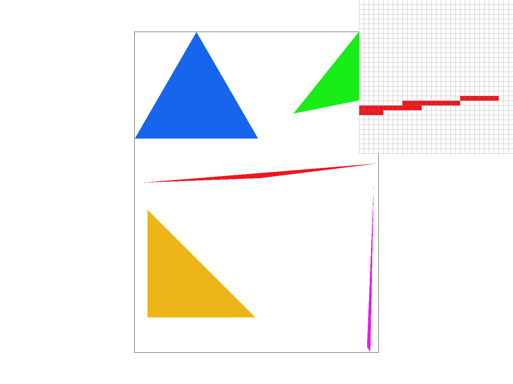
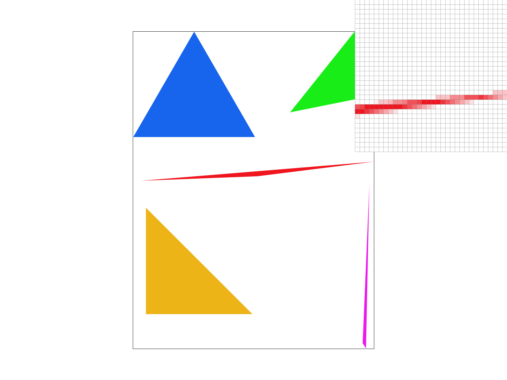
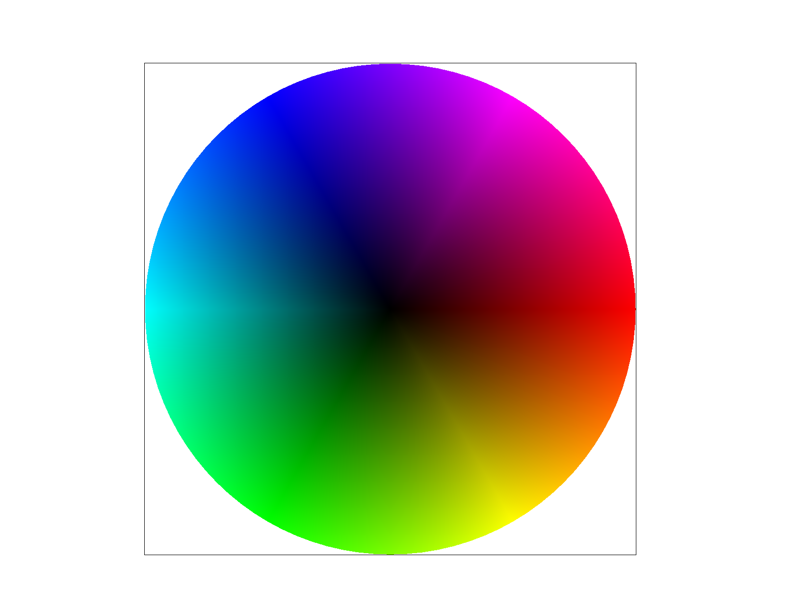
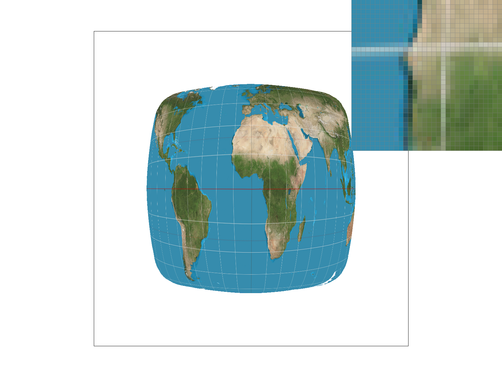

CS184/284A Spring 2025 Homework 1 Write-Up
Names: Johanna Liu
Link to webpage: cal-cs184-student.github.io/hw-webpages-johanna-1/hw1/index.html
Link to GitHub repository: github.com/cal-cs184-student/hw1-rasterizer-johanna
Overview
- Give a high-level overview of what you implemented in this homework. Think about what you've built as a whole. Share your thoughts on what interesting things you've learned from completing the homework.We implemented functions that rasterized triangles in order to present graphics on a screen. We started with simple implementations of rasterizing triangles then continued with supersampling to get rid of jaggies. Then we worked on transforms of shapes. We moved on to dealing with textures, implementing colors for our triangles, using pixel sampling for texture mapping. The barycentric coordinate system was important for interpolation. We investigated how different sampling methods both on a pixel and level basis would impact how our graphics turn out.
Task 1: Drawing Single-Color Triangles
- Walk through how you rasterize triangles in your own words.The function rasterize_triangles takes in parameters of three points and a color. Firstly, we check every pixel in our bounds -- note that here we use the center of the pixel as sample points for each pixel. A triangle consists of three vertices/points, and let's represent these points with the parameters given:
A = (x0, y0)
B = (x1, y1)
C = (x2, y2)
I want to test a point P = (px, py) for whether it is in the triangle and is to be colored.
I compute the 2D crossproduct of a triangle edge (say, AB,) and a vertex (say, A) to the unknown point P, simply using the common equation. Calculating the cross products then tells me which side of AB (or whichever edge) P is on. If the cross product is >0, P is on one side, if <0, P is on the other side. If =0, P is on the line. If P is on the SAME side of all AB, BC, and CA, then it is inside the triangle. This takes into account both clockwise and counter-clockwise vertex winding.
- Explain how your algorithm is no worse than one that checks each sample within the bounding box of the triangle.
My xmin, xmax is the horizontal range that I must check (using given vertices of the triangle), and my ymin, ymax is my vertical range that I must check. This just is the bounding box of the triangle. I am checking within that rectangle, so it is of course, not worse.
- Show a png screenshot of basic/test4.svg with the default viewing parameters and with the pixel inspector centered on an interesting part of the scene.

- Extra credit
I doubt this counts, but I did OpenGL edge rules before I realized that it is not necessary. I hashed it out and rewrote the simpler version, so the code is still there. (Though I also hashed a large part of that out, too, after doing Task 2.)
Task 2: Antialiasing by Supersampling
- Walk through your supersampling algorithm and data structures.Why is supersampling useful? What modifications did you make to the rasterization pipeline in the process? The rasterization pipeline is like this: Triangles (rasterize triangle) are drawn into the sample_buffer, and resolve_to_framebuffer converts that into rgb_framebuffer_target. Modifications I made are:
In rasterize_triangle, I had to take into account the super sampled pixels, ie a sample rate of 4 now giving each pixel 2x2 grid.
So aside from iterating over the bounding box, I also iterated every pixel individually using the sqrt of the sample rate, splitting what used to be the center of the pixel sample points into however many sample points now required for the different sample rates. The sample_buffer then used the calculated index (that takes into account supersampling) to fill in the sub-pixels with colors.
Next, I modified fill_pixel() with a similar logic. It should iterate over the supersampled sub-pixels, too, with sample_buffer once again using a modified index. In set_sample_rate() and set_framebuffer_target(), I just made sure that sample_buffer was resized with (width * height * sample_rate) instead of only (width * height) since, once again, this modification is needed for the extra grid within each pixel. In resolve_to_framebuffer(), we modified it from the original by averaging out all sub-pixels (instead of only able to read on pixel/sub-pixel)
Supersampling is useful because it "smooths" out edges with gradiented colors by sampling more color data within each pixel. This removes jaggies, and just overall increases the quality of graphics.
- Show png screenshots of basic/test4.svg with the default viewing parameters and sample rates 1, 4, and 16 to compare them side-by-side.
|

|

|

|
Task 3: Transforms

Task 4: Barycentric coordinates
- Explain barycentric coordinates in your own words and use an image to aid you in your explanation.
Given any point P=(x,y) inside a triangle, it can be written as P = αA + βB + γC (using the same A B C for each vertex notation from earlier).
And α + β + γ = 1.
The pixel is inside the triangle if all three coordinates are non-negative.
Barycentric coordinates are weights for each vertex at a pixel, aka they tell you how much each vertex contributes to the pixel (how much each pixel "belong" to a vertex). Using these coordinates, the cross product uv in our code represents the texture coordinate for that pixel. A weighted sum of each vertex's color. For example, a pixel near the center of triangle would have a more blended color.

- Show a png screenshot of svg/basic/test7.svg

Task 5: "Pixel sampling" for texture mapping
- Explain pixel sampling in your own words and describe how you implemented it to perform texture mapping. Briefly discuss the two different pixel sampling methods, nearest and bilinear.
Pixel sampling is just turning a given coordinate (u,v) into a color (or a texture). Applying textures is sampling, so texture mapping uses pixel sampling to applying texture (2D) to a graphic on our screen. Since we only know the UV at the triangle vertices, we used barycentric coordinates to determine locations (UVs) of the pixels inside these triangles. So we're using barycentric coordinates to "interpolate" these locations to fill with color/texture.
Nearest and bilinear:
For nearest, we just pick the texel that is closest to the center of the pixel. This is more pixelated than bilinear.
For bilinear, we take 4 nearest sample locations and find their fractional offsets (distance from those nearest locations). We use this to horizontally and vertically blend the textures. Which is also called interpolation. This is smoother.
- Show and compare four png screenshots

|

|
|
|
|
- Comment on the relative differences. Discuss when there will be a large difference between the two methods and why.
The nearest sampling at one sample per pixel is very pixelated, with the bilinear sampling at still 1 sample per pixel being smoother. At 16 samples per pixel, nearest sampling is significantly more blocky, and bilinear sampling is way more smooth and is a better representation of what the image looks like. The reasons for this is similar to what was detailed above, bilinear sampling is a weighted average of 4 texels, so it has more blended colors/textures that come out more natural than nearest sampling, which is not an average and instead is just returning a single texel's color.
Task 6: "Level Sampling" with mipmaps for texture mapping
- Explain level sampling in your own words and describe how you implemented it for texture mapping.
level sampling is just which mipmap level we choose from.
Level 0 is the full resolution texture, level 2 downsamples, level 4 downsamples again, and so on and so forth.
If we only have a small space on screen, we don't want really high resolution texture to be fitted into that small area, so we should sample a higher level. We implement it for texture mapping in get_level to determine which level; this involves scaling by texture size and then using that to determine how large that change is, then using log2 to take into account that mipmap levels half resolution.
- Describe the tradeoffs between speed, memory usage, and antialiasing power between the three various techniques.
Level 0 is good for magnification since it's full resolution. But when displayed on smaller object, it causes jaggies and aliasing. Requires more memory due to its higher quality, and also slower. L_NEAREST only samples the level nearest to our computed mipmap level. Less detailed than level 0. (relatively) Faster, less memory in the same way. Less jaggies when shrunk.
L_LINEAR does blending between two levels, instead of only taking one like L_NEAREST, so it is the smoothest with the least jaggies when shrunk. Less memory, faster.
- Using a png file you find yourself, show us four versions of the image

|

|

|

|